The rosary
A loop of beads used to count prayers. In Catholic devotion the rosary is a prayer to Mary, which is why it hangs on almost every stall on the road to her shrine.
Look for rosaries draped over statues hung above eye level.
An awareness campaign about Mount Mary, Bandra. It shifts the focus from the church alone to the people, objects and moments on the road that leads to it.
The idea
Most pictures of Mount Mary show only the Basilica. But the visit begins much earlier, on a street full of devotional objects, stall keepers, visitors and repeated religious images.
This campaign makes that overlooked street visible. It runs as three campaigns, each looking at the same place from a different angle.
Three campaigns
Where you'll see it
The campaign runs on Instagram, in print and on the road itself.
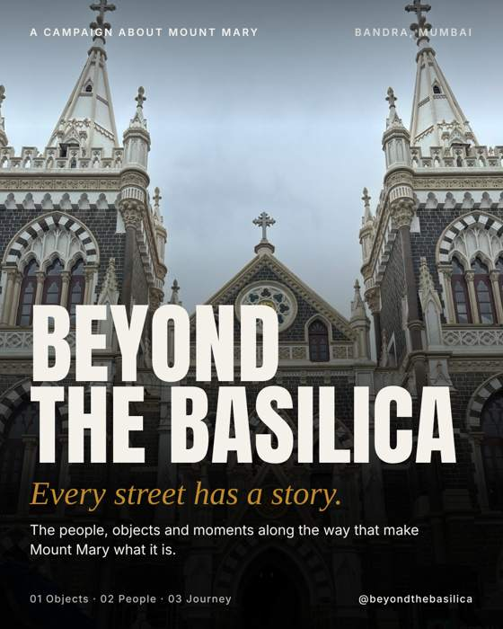
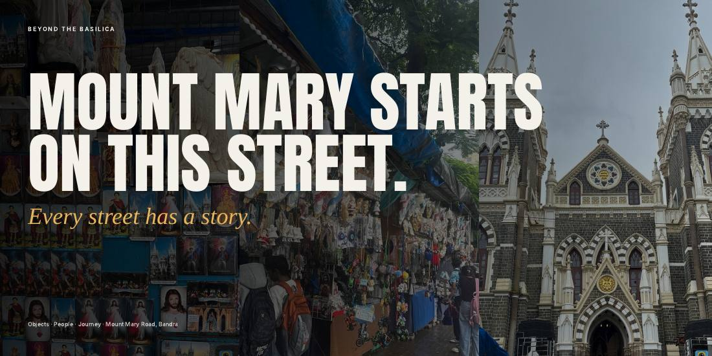
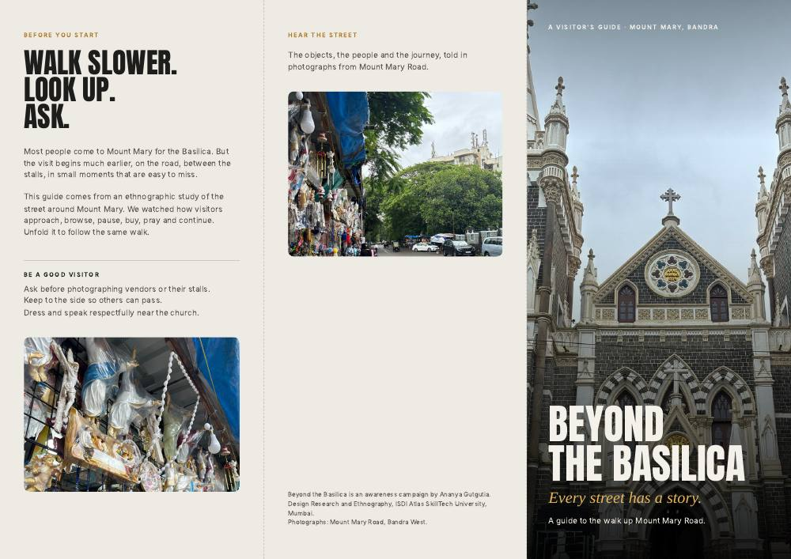
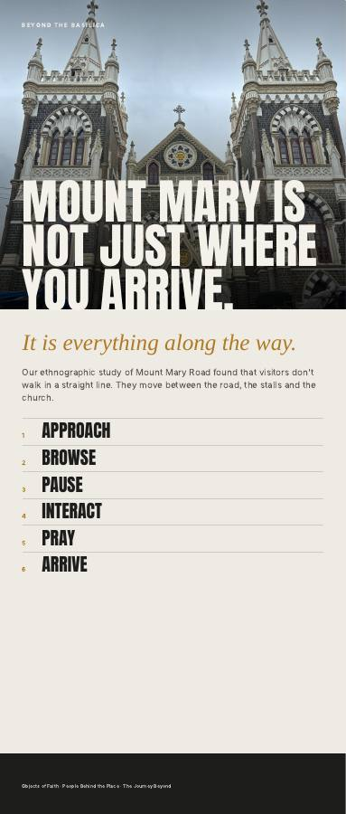
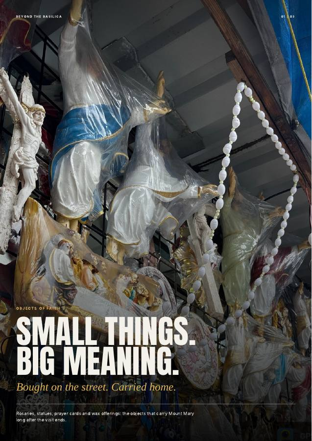
Campaign 1 of 3
Before you reach the church, you pass hundreds of devotional objects. Each one is bought on the street and carried home, so the visit continues long after you leave.
The stories
A loop of beads used to count prayers. In Catholic devotion the rosary is a prayer to Mary, which is why it hangs on almost every stall on the road to her shrine.
Look for rosaries draped over statues hung above eye level.
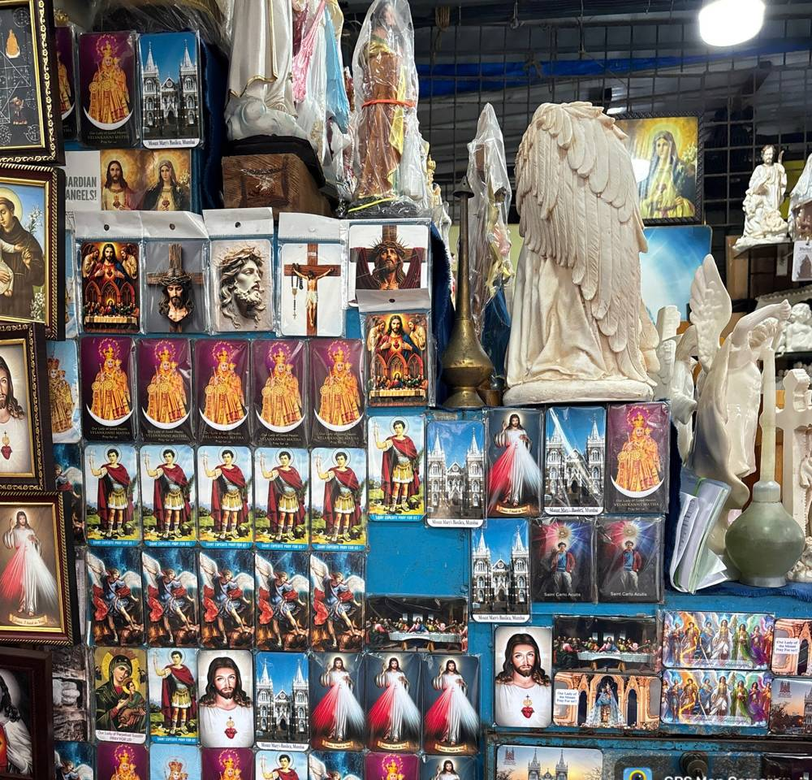
A small printed image of Mary, Jesus or a saint, often with a prayer on the back. People keep them in wallets, cars and homes.
The same faces repeat across stalls. That repetition tells you where you are.
The Basilica is dedicated to Our Lady of the Mount, Mother Mary. Her statue appears on the street in every size long before you see her inside.
Count how many versions of her you pass before the church door.
Some stalls sell candles shaped like hands, feet and other parts of the body. Devotees choose the one that matches what they are praying about, often healing, and light it at the church.
Look for wax shapes beside ordinary candles, especially around the September Bandra Fair.
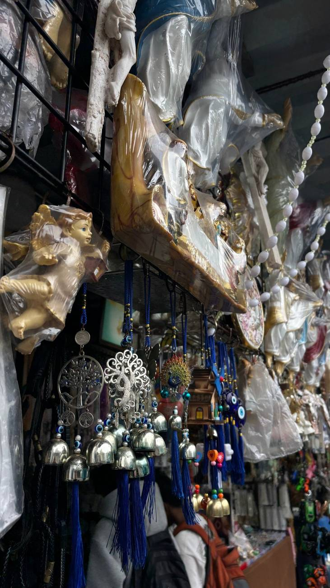
A protective charm from a much wider tradition of belief, not a church object. Here it hangs on the same hook as rosaries and saints.
Find a stall where faith and everyday belief hang together.
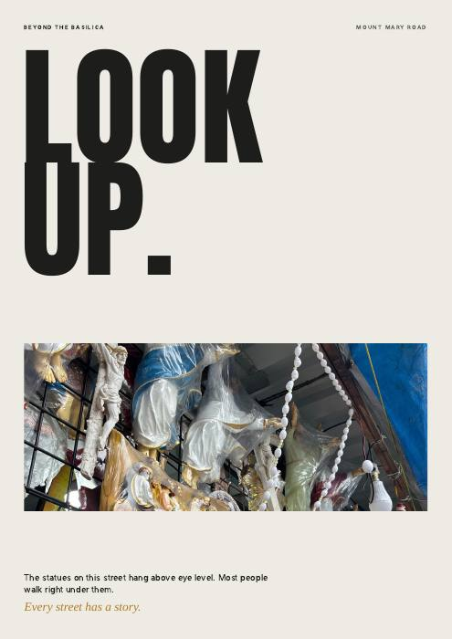
The "Look up." street poster and five object storytelling cards bring these stories to the stalls themselves.
On Instagram
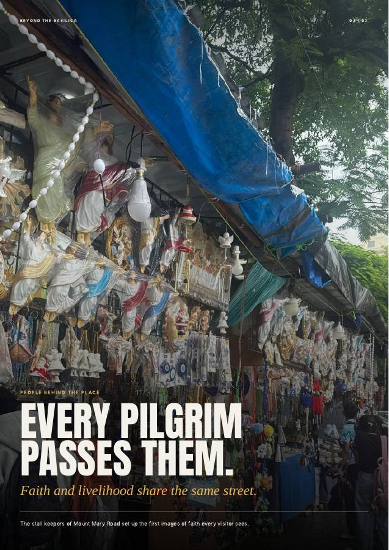
Campaign 2 of 3
The stall keepers set up the first images of faith a visitor sees, arranging statues high and cards in rows so every stall works like a small shrine.
The stories
Stalls line the road to the church, and each one is a small display of faith. For the people who run them, these stalls are a living. For visitors, they are part of the pilgrimage.
People stop, ask, choose, buy and walk on. Every pause is a conversation, and these small exchanges shape how Mount Mary feels.
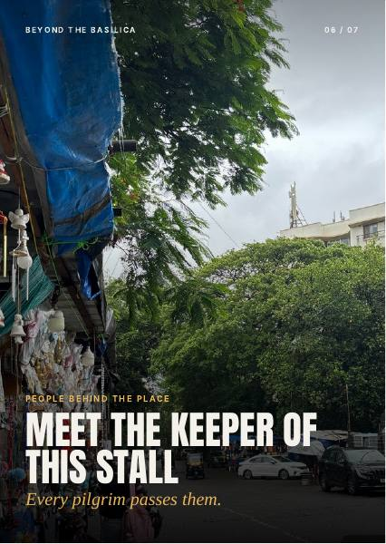
Fill-in cards completed with stall keepers, with their permission: the name of the stall, how long they have been on this street, and their story in their own words.
Vendor stories collected on the street will be added here.
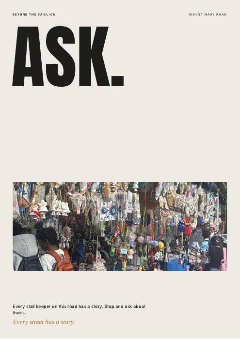
The "Ask." street poster and stall tags invite visitors to stop and talk to the people behind the stalls.
On Instagram
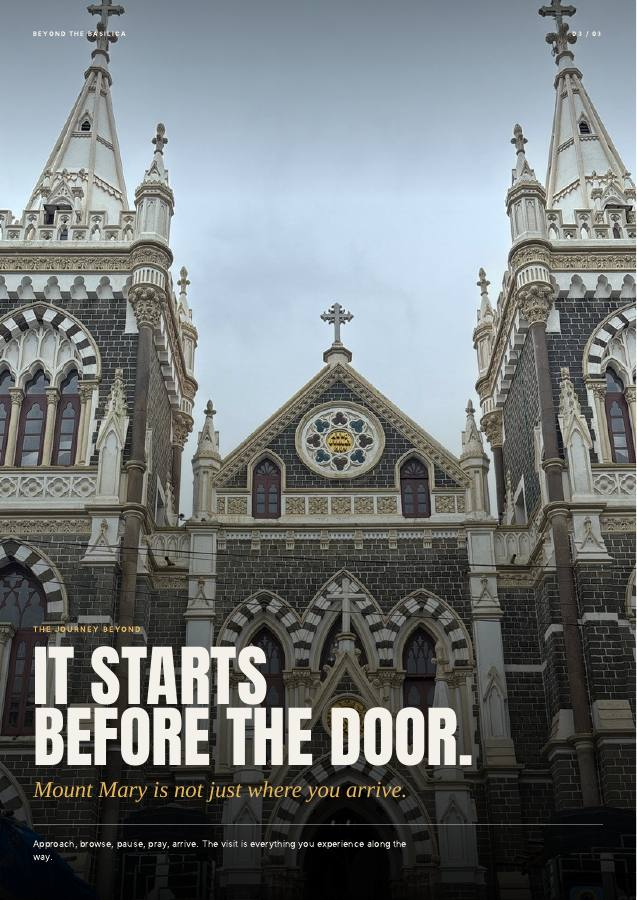
Campaign 3 of 3
The visit is not a straight line. People move back and forth between the road, the stalls and the church. The Basilica is where the journey ends, not where it begins.
The walk
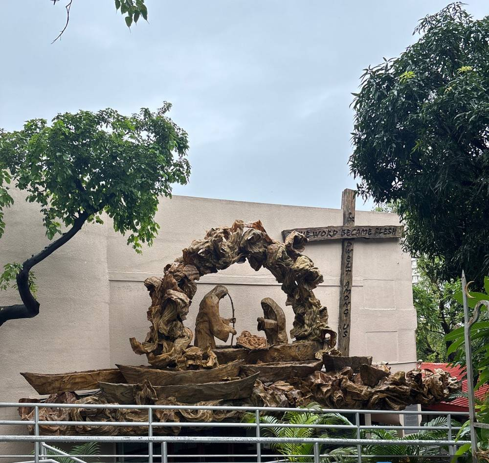
Shrines along the approach turn the street itself into part of the sacred space.
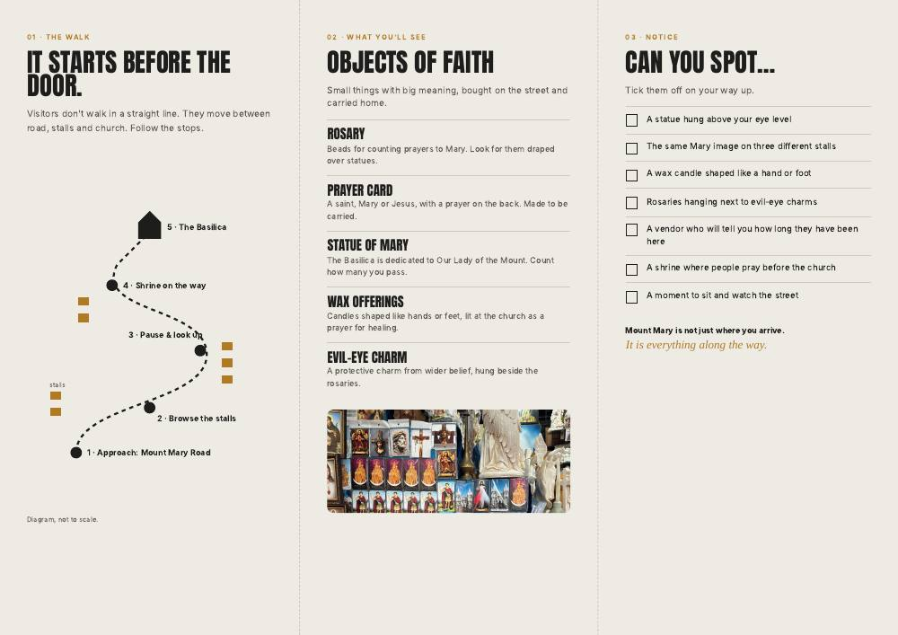
A fold-out guide with the walk, the objects and a "Can you spot…" checklist, handed out at the foot of the road.
On Instagram
About
Beyond the Basilica grew out of an ethnographic study of Mount Mary Road in Bandra, Mumbai. We visited the area, observed how people moved, what they noticed, how they dealt with vendors, what they bought and where they prayed, and documented it through photographs.
The observations were sorted into recurring behaviours, then grouped into themes. Those themes became the three campaigns on this site.
What we found
Religious objects are displayed, bought and carried home on the same street. This became Objects of faith.
Vendors and visitors shape the experience through small, everyday exchanges. This became The people behind the place.
Visitors move between road, stalls and church; the journey is not linear. This became The journey beyond.
Campaign design by Ananya Gutgutia. Ethnographic research with Navya Ganatra and Palak Agarwal. Design Research and Ethnography, ISDI Atlas SkillTech University, Mumbai. All photographs taken on Mount Mary Road, Bandra West.